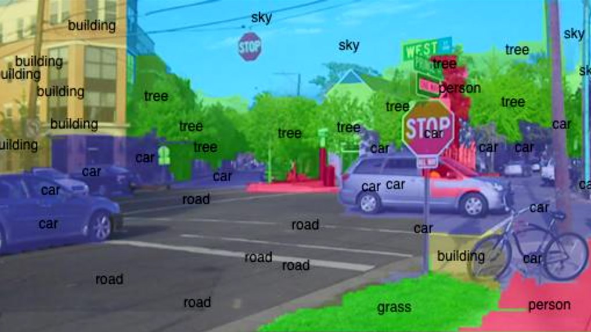

Computer Vision
2004
In 2004, DARPA held their first Grand Challenge. It offered $1 million for whoever could make a car capable of driving 150 miles through the Mojave Desert the fastest.
Sensor fusion
Sensor fusion is how the data from all the sensors like the cameras, radar and LIDAR, are combined to build an understanding of the car’s environment. Some sensors are better than others at certain measurements (e.g. LIDAR and radar are better with distance than cameras), while some can work better in different weather conditions. By combining all of our sensor data, we get a richer understanding of the world. Using sensor fusion, we get fewer false positives or negatives.
Canvasing method
This is when the car looks over all of its sensors to tries to determine whether any of the sensors is giving false data. One way this is done is a voting protocol where if sensors are split on some data (e.g. if something is in front of the car) then it picks the sensors where most other ones agree with and takes that to be more reliable
RANSAC
Random Sample Consensus (RANSAC) aims to guess the parameters of a model by randomly sampling observed data that contains outliers, when outliers are given no influence on the estimates.
Sensor fusion combinations
Sensor fusion can be performed in complementary, competitive, or cooperative combinations
Complementary
When the sensors do not directly depend on each other, but can be combined in order to give a more complete image of the environment. Fusing this data is not too difficult, since the data can simply be added to each other. The obvious disadvantage of is that one or more of the sensors is ineffective, it will lose part of its vision.
When each sensor on a car is focused on different areas of the it’s surroundings to build up a picture of the environment, this is a complementary configuration
Competitive
Competitive sensor fusion combinations are used for fault-tolerant and robust systems. Sensors in a competitive configuration have each sensor delivering independent measurements of the same target and can also provide robustness to a system by combining redundant information.
There are two possible competitive combinations:
- Fault tolerance - the fusion of data from different sensors or the fusion of measurements from a single sensor taken at different instants. A special case of competitive sensor fusion is fault tolerance. Fault tolerance requires an exact specification of the service and the failure modes of the system. In case of a fault covered by the fault hypothesis, the system still has to provide its specified service.
- Competitive configurations - provide robustness to a system by delivering a degraded level of service in the presence of faults. While this graceful degradation is weaker than the achievement of fault tolerance, the respective algorithms perform better in terms of resource needs and work well with heterogeneous data sources
- An example would be the reduction of noise by combining two overlaying camera images
Cooperative
Combines non-redundant data from all the sensors. The result is often too sensitive to inaccuracies in all participating sensors. Because the data produced is sensitive to inaccuracies present in individual sensors, cooperative sensor fusion is probably the most difficult to design. Thus, in contrast to competitive fusion, cooperative sensor fusion generally decreases accuracy and reliability.
An example of a cooperative sensor configuration can be found when stereoscopic vision creates a three-dimensional image by combining two-dimensional images from two cameras at slightly different viewpoints
SLAM
The next part of the process is Simultaneous Localisation and Mapping (SLAM), which you can read about here
Sources